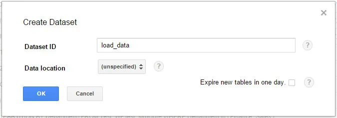
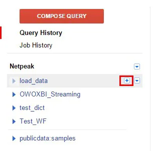
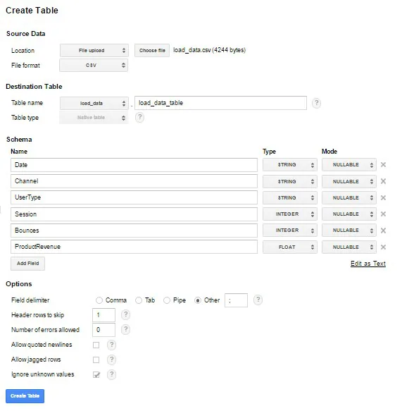
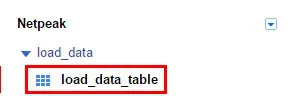
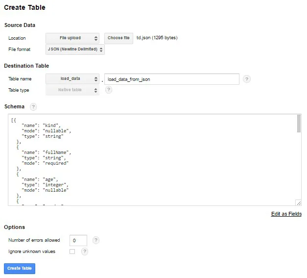
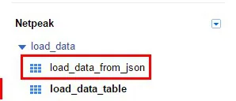
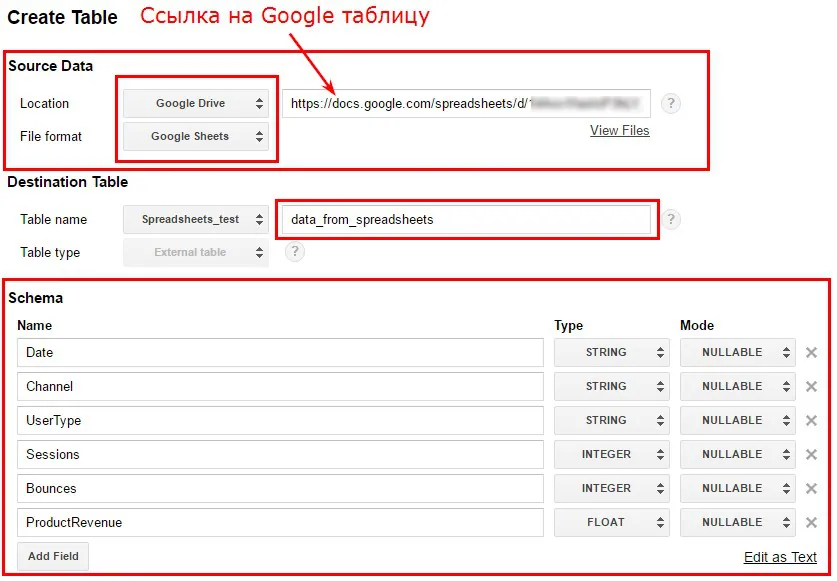
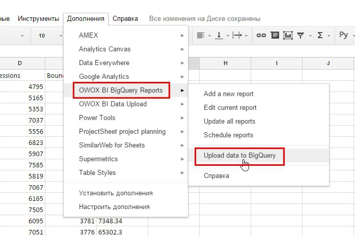
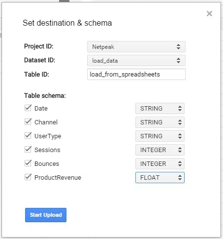
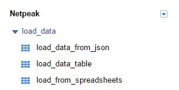

Как загружать данные в Google BigQuery.
Все говорят о BigData, необходимости анализировать большие объемы информации, но при этом не знают, как обрабатывать данные, и не решаются сделать первые шаги. В этом посте мы расскажем о том, как начать работу с облачным сервисом Google BigQuery, если у вас уже есть данные в CSV, JSON или Google Spreadsheets.

Первый способ. Загрузка данных из CSV файлов
- Перед тем как приступить непосредственно к процедуре загрузки информации, нам необходимо создать набор данных (data set) и таблицу, в которую будем их загружать.
1.1. Для этого открываем Google BigQuery в браузере, выбираем нужный проект из выпадающего списка, после чего в меню указываем «Create new dataset».

1.2. Окно создания набора данных выглядит следующим образом:

В поле Dataset ID необходимо задать имя набора данных, мы назвали его «load_data». С помощью выпадающего поля «Data location» можно выбрать регион физического местонахождения сервера, на котором будут храниться данные (по умолчанию установлено значение «unspecified», то есть место хранения данных не определено). Если установить галочку возле пункта «Expire new tables in one day», все таблицы будут храниться только один день, после чего автоматически будут удалены из этого набора данных и базы в целом. Используйте эту опцию для временных таблиц.
1.3. Для завершения процесса создания нового набора данных жмем «OK», теперь в нашем проекте появился пустой набор данных «load_data».
- Следующий шаг — создание таблицы в новом наборе данных. Кликаем на плюс, который появится, если вы наведете курсор мыши на только что созданный набор данных.

Окно создания таблицы содержит четыре блока настроек и выглядит следующим образом:

2.1. Source data. В этом блоке вы выбираете источник, из которого будет загружена информация. Источником данных могут быть файлы в формате CSV, JSON и Cloud Datastore Backup (последний позволяет загружать данные из файлов хранящихся на Google Storage). Для дальнейшей работы предлагаю скачать два файла, которые я назвал в соответствии с форматами «csv» и «json». Первым загрузим «csv». Чтобы выбрать файл, нажимаем кнопку «Choose file», которая находится в поле «Location». К области Source data мы вернемся, когда будем подгружать информацию из файла «json».
2.2. Destination Table;— выбор места хранения данных. Здесь указываем название таблицы, в которую планируем импортировать данные. Если вы впишете в поле «Table ID» название уже существующей в наборе данных таблицы, то данные будут добавлены в существующую таблицу, если вы введете новое название — будет создана новая таблица. Также у вас есть возможность выбрать тип таблицы из выпадающего списка в поле «Table type». В Google BigQuery существует два типа таблиц:
- Native — данные будут загружены непосредственно в BigQuery, в этом случае процедура импорта данных может продолжаться дольше, но запросы, направленные к таблицам типа Native, будут выполняться быстрее;
- External — вы можете выбрать файл, хранящийся в Google Storage, таким образом данные не загрузятся в BigQuery, и запросы к таблицам с типом External будут обрабатываться дольше.
2.3. Schema. На этой вкладке необходимо описать структуру будущей таблицы. С помощью кнопки «Add field» добавляем и описываем шесть полей, которые будут присутствовать в нашей таблице. Кнопка «Edit as text» дает возможность описать структуру таблицы в JSON формате (этот способ мы рассмотрим позже, когда будет подгружать файл «json»).
Доступные типы данных:
| Тип данных | Описание |
| STRING | Текст, максимальный размер строки — 2 МБ. Этот тип данных принимает кодировку UTF-8, если вы планируете загрузить кириллицу, предварительно перекодируйте ее в UTF-8.;В примере в качестве типа данных устанавливайте именно «STRING». |
| INTEGER | 64-битное целое число. |
| FLOAT | Число с плавающей точкой. |
| BOOLEAN | Булево значение, принимает значение true или false, чувствительно к регистру. |
| TIMESTAMP | Дата и время. BigQuery хранит эти данные в UNIX формате. Вы описываете время как положительное число, которое указывает количество секунд начиная с 1 января 1970 года 00:00:00, или отрицательное — количество секунд до 1 января 1970 года 00:00:00. Несмотря на то, что BigQuery хранит данные о дате и времени в UNIX формате, вы можете загружать их также в формате YYYY-MM-DD HH:MM:SS. Если в вашем файле в качестве даты указано значение 2016-02-29 12:10:54, оно корректно загрузится в формате даты и времени. |
2.4. Options — последний блок, который необходимо заполнить перед загрузкой данных. В поле «Field delimiter» указываем разделитель полей для CSV файла. В нашем случае это точка с запятой, в связи с чем мы устанавливаем переключатель в режим «Other» и в текстовом поле вводим «;».
В поле «Header rows to skip» вписываем количество строк, содержащих заголовки данных, чтобы эти строки игнорировались при импорте. С помощью поля «Number of errors allowed» мы задаем максимально допустимое количество ошибок при загрузке. Если установить в этом поле 0, то при первой же ошибке в загружаемых данных (к примеру, при несоответствии загружаемых данных типу поля), процедура загрузки будет остановлена. Галочку «Allow Quoted Newlines» надо ставить в случае, если в загружаемом CSV файле встречаются текстовые поля, значение которых переходит на следующую строку, например:
1,2,"this is my string",4,5 1,2,"another string",4,5
В данном случае нам требуется загрузить из CSV файла две строки, но, как видим, второе поле первой строки разделено переносом на новую строку. Чтобы при импорте этот перенос игнорировался, установите галочку «Allow Quoted Newlines». Опция «Allow jarred rows» доступна только для CSV файлов. Если вы установите эту галочку, отсутствующие записи в необязательных столбцах будут обрабатываться как нулевые, если не установите — такие записи будут считаться ошибочными, и если ошибочных записей много, импорт будет остановлен. Галочка в поле «Ignore unknown value» позволяет во время загрузки игнорировать значения, которые не соответствуют структуре данных, описанной на вкладке «Specify schema».
2.5. Для импорта данных нам остается нажать кнопку «Create table», после чего в наборе данных появится новая таблица «load_data_table», и данные из CSV файла будут загружены в нее.

Подводные камни при импорте CSV-файла в Google BigQuery.
- Если у вас есть файлы более 10 МБ, их можно загрузить только через Google Cloud Storage. Это может занять довольно продолжительное время в зависимости от размера файла.
- Если важно импортировать все данные из CSV, то файл должен соответствовать всем стандартам CSV. Выгрузки из некоторых сервисов эти стандарты нарушают. Так, при сохранении CSV из Excel кодировка будет CP1251. В данном случае с помощью Notepad++ перед загрузкой необходимо перекодировать файл в формат UTF-8. В ином случае часть строк получится с ошибками. Только после преобразования в правильный CSV файл можно загружать в BigQuery.
- Важно соблюдать ограничения на импорт.
Второй способ. Загрузка данных из JSON файла
- Ранее мы уже скачали файл «json». У файлов в JSON формате другая структура данных, чем у данных, загруженных в прошлом примере из CSV. 1.1. Для загрузки этого файла необходимо повторить описанные ранее шаги. Жмем «+» напротив созданного в прошлом пункте набора данных «load_data», задаем имя новой таблицы «load_data_from_json».

1.2. В блоке «Source data» выбираем скачанный ранее файл. Для этого в выпадающем списке «File format» выбираем JSON, нажимаем кнопку «Choose file» и выбираем нужный файл. 1.3. Структуру таблицы в блоке «Schema» можно описать в JSON формате. Для этого нажимаем «Edit as text» и вставляем следующий текст:
{ "name": "kind", "mode": "nullable", "type": "string" },
{ "name": "fullName", "type": "string", "mode": "required" },
{ "name": "age", "type": "integer", "mode": "nullable" },
{ "name": "gender", "type": "string", "mode": "nullable" },
{ "name": "phoneNumber", "type": "record", "mode": "nullable", "fields":
[ { "name": "areaCode", "type": "integer", "mode": "nullable" },
{ "name": "number", "type": "integer", "mode": "nullable" } ] },
{ "name": "children", "type": "record", "mode": "repeated", "fields":
[ { "name": "name", "type": "string", "mode": "nullable" },
{ "name": "gender", "type": "string", "mode": "nullable" },
{ "name": "age", "type": "integer", "mode": "nullable" } ] },
{ "name": "citiesLived", "type": "record", "mode": "repeated", "fields":
[ { "name": "place", "type": "string", "mode": "nullable" },
{ "name": "yearsLived", "type": "integer", "mode": "repeated" } ]
} ]
1.4. Блок «Options» для JSON файла содержит всего две опции. С помощью «Number of errors allowed» указываем допустимое количество ошибок при импорте данных. Галочка в поле «Ignore unknown values» означает, что в процессе загрузки будут игнорироваться значение, которые не соответствуют структуре таблицы, описанной на предыдущей вкладке. 2. Жмем «Submit» и через несколько секунд в наборе данных «load_data» появится еще одна таблица.

Третий способ. Загрузка данных из Google Spreadsheets
Данные из Google Таблиц можно загрузить двумя способами.
1. Загрузка данных из Google Таблицы из интерфейса Google BigQuery
Для этого необходимо выбрать из выпадающего списка Location пункт «Google Drive» и указать полную ссылку на нужную Google Таблицу. Для того, чтобы указать ссылку на конкретный лист, введите полный URL, включая параметр gid. Далее процедура точно такая же, как была описана в первом и втором пункте — задаёте имя таблицы и описываете её схему.

В этом случае данные не только будут загружены в Google BigQuery, но также будет сохранена связь непосредственно с листом таблицы Google. Все внесённые на лист изменения будут отображаться при запросах к данной таблице в Google BigQuery даже без повторной процедуры загрузки данных.
2. Загрузка данных из Google Таблицы с помощью OWOX BI
2.1. Возможно, в повседневной работе с данными вы чаще всего используете Google Таблицы, и в таком случае наиболее удобным источником для выгрузки данных будет дополнение OWOX BI BigQuery Reports. Чтобы установить его, переходим по ссылке и нажимаем кнопку «+ бесплатно». В качестве примера я возьму случайно сгенерированную таблицу, которую мы использовали при загрузке CSV файла. Перейдя по этой ссылке, вы можете посмотреть и скопировать данные. После установки дополнения «OWOX BI BigQuery Reports», оно появится в списке доступных дополнений. Выбираем его в меню и кликаем на «Upload data to BigQuery».

2.2. В открывшимся диалоговом окне «Set destination & schema» указываем проект, набор данных и название таблицы, в которую будут загружены данные, а также описываем структуру таблицы аналогично тому, как мы это делали при загрузке данных из CSV файла.

Через несколько секунд после нажатия на «Start upload» в нижней части окна появится сообщение о том, что таблица успешно загружена. Кликнув на «Show table in BigQuery», вы перейдете в интерфейс Google BigQuery, в котором уже будет присутствовать только что загруженная таблица «load_from_spreadsheets».

Выводы
Мы рассмотрели три способа импорта данных в Google BigQuery:
- из CSV файла;
- из JSON файла;
- из Google Spreadsheets.
В дальнейшем вы сможете свободно работать с полученными массивами информации, например обрабатывать данные из множества таблиц. Загружайте информацию из различных источников данных и используйте всю мощь Google BigQuery при ее обработке. Надеюсь, этот мануал будет вам полезен.